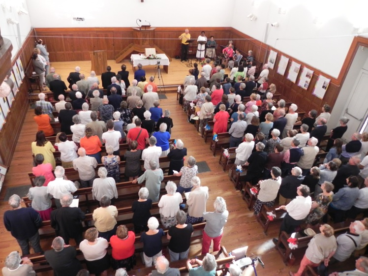

Présentation
L'Eglise protestante unie du Crestois est une Eglise chrétienne, protestante, réformée, issue du mouvement de la Réforme du XVIe siècle (Luther, Zwingli, Calvin...). Elle est héritière des Eglises réformées historiques implantées sur le territoire du Crestois, de Grâne à Espenel, de Plan de Baix à Saillans, d'Eurre à Aouste sur Sye, en passant par Mirabel et Blacons et Beaufort sur Gervanne, et bien sûr Crest. Elle est constituée d'environ 400 foyers.
Qui sommes-nous ?
Une Eglise chrétienne…
L'Eglise protestante unie du Crestois est une Eglise (assemblée ou communauté) "chrétienne" dans la mesure où elle met sa confiance en Dieu, révélé par Jésus de Nazareth, le Christ, mort et ressuscité. Elle a cette conviction profonde que Dieu est Amour. Oui, Dieu aime d'un amour incommensurable l’humanité ! A la suite des apôtres et des chrétiens d'hier, et avec les autres Églises chrétiennes d'aujourd'hui, nous croyons et proclamons au monde le Dieu de Jésus Christ.
Protestante…
L'Eglise protestante unie du Crestois est une Eglise "protestante" dans le sens qu'elle trouve ses racines dans la Réforme du XVIe siècle en Europe. Elle est particulièrement héritière du protestantisme historique en France dont les mots d'ordre étaient alors : sola fide (la foi seule), sola scriptura (l’Écriture seule), sola gratia (la grâce seule), solus Christus (Christ seulement) et soli Deo gloria (à Dieu seul la gloire). Sur la lancée de la Réforme, notre Eglise annonce, proclame et témoigne (en latin : protestare = "attester devant") de cette Bonne Nouvelle : Dieu aime et accueille chaque être humain tel qu’il est, sans aucun mérite de sa part.
Réformée…
L'Eglise protestante unie du Crestois est une Eglise "réformée" car héritière de la tradition calviniste (Jean Calvin). Elle croit en cet Evangile de grâce, annoncé au coeur de la Bible et manifesté par l’Esprit de Dieu. C'est pourquoi notre Église reste à l’écoute des textes bibliques et de leur interprétation, et se laisse conduire et déplacer par eux au quotidien. Dit autrement, elle se laisse réformer, suivant en cela l'adage du XVIIe siècle : l'Église est toujours à réformer (en latin : Ecclesia semper reformanda est).
Eglise protestante unie du Crestois
Depuis 2013, notre Eglise a pris le nom d'Eglise protestante unie du Crestois. Elle appartient à l'Eglise protestante unie de France (EPUdF), union des Eglises luthérienne et réformée de France, membre de la Fédération Protestante de France (FPF).
.